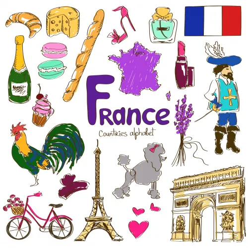
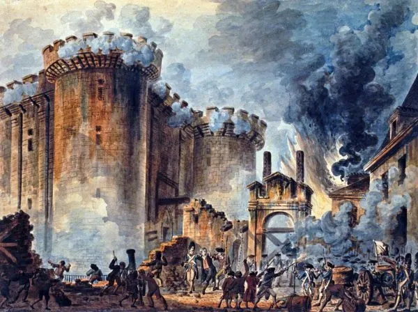
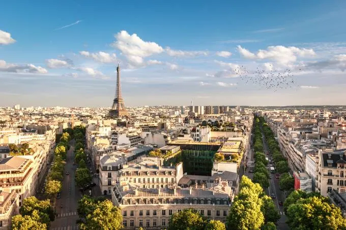
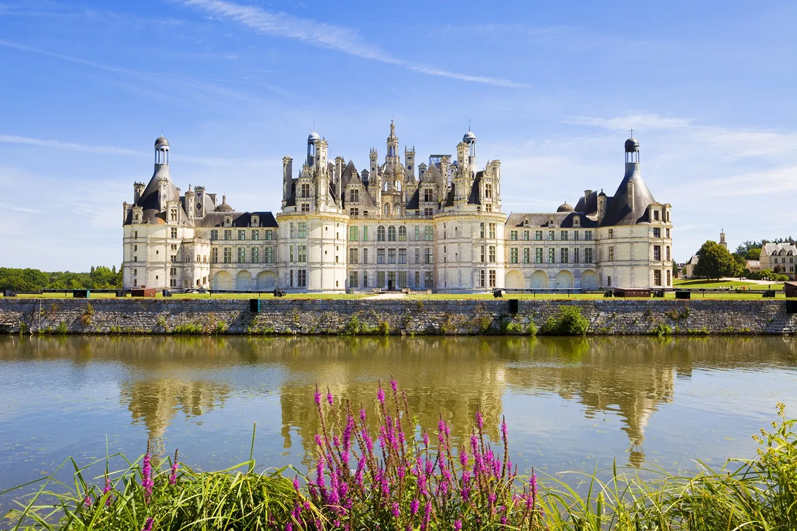

Bem-vindo ao Descubra a França
Descubra a França é um site que apresenta os costumes, a cultura e a história da França, permitindo que pessoas conheçam melhor as tradições, curiosidades e a identidade do país.
 França
França
Descubra a França é um site que apresenta os costumes, a cultura e a história da França, permitindo que pessoas conheçam melhor as tradições, curiosidades e a identidade do país.
A França é um país localizado na Europa Ocidental e é conhecida por sua rica história, cultura e belas paisagens. Sua capital é a cidade de Paris, famosa por monumentos como a Torre Eiffel, um dos cartões-postais mais conhecidos do mundo.
O país possui grande influência na arte, na moda, na gastronomia e na literatura. Pratos tradicionais como croissants, queijos e diversos tipos de pães fazem parte da culinária francesa, admirada internacionalmente.

A França também possui uma história marcante, tendo sido palco da Revolução Francesa, que influenciou ideias de liberdade e democracia em vários países. Além disso, o país teve grande importância em eventos históricos mundiais e contribuiu para o desenvolvimento da arte, da ciência e da cultura ao longo dos séculos.

Além disso, o território francês apresenta paisagens variadas, incluindo montanhas, praias, campos e cidades históricas. O rio Rio Sena corta Paris e contribui para o charme da capital.

Atualmente, a França é um dos destinos turísticos mais visitados do mundo, atraindo milhões de visitantes todos os anos por sua cultura, arquitetura e patrimônio histórico. Conhecer a França é explorar um país que une tradição, arte e modernidade.

Torre Eiffel

Mont Saint-Michel

Cidade Murada de Saint-Malo

Catedral de Estrasburgo

Castelo de Chambord

Vale do Loire